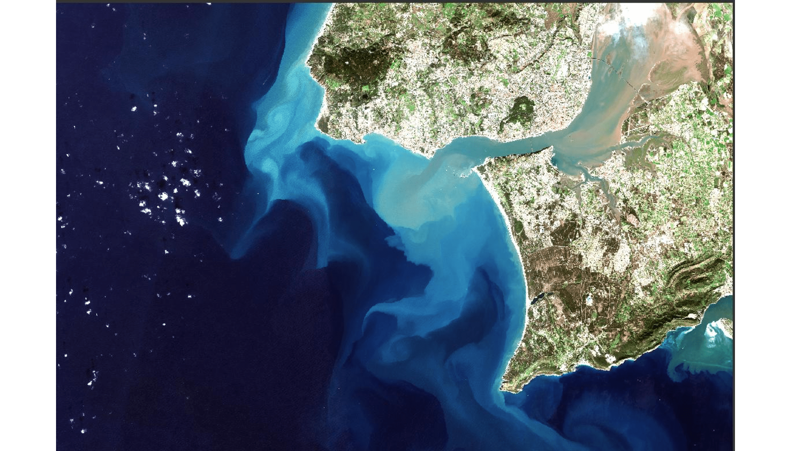
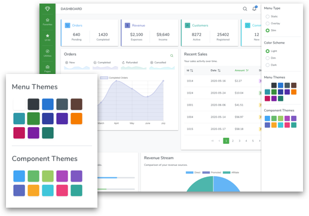
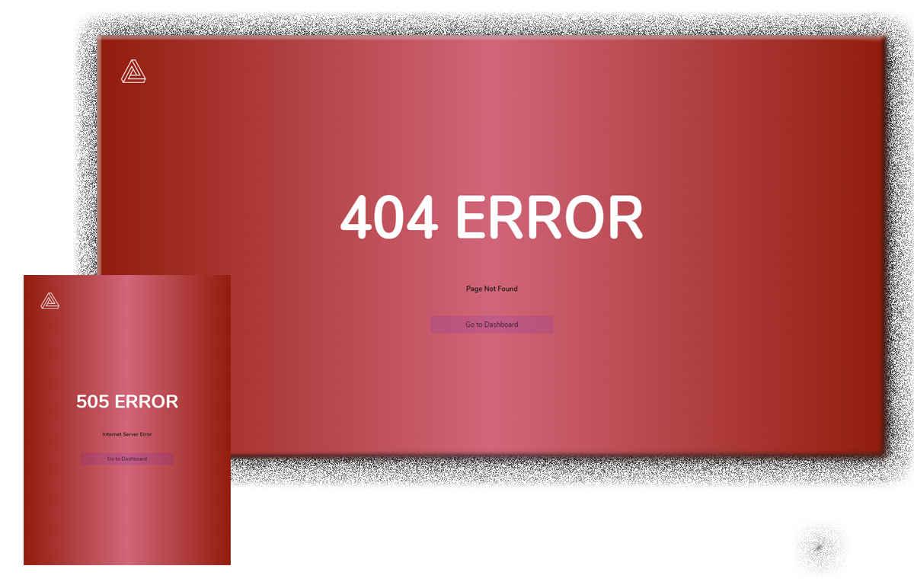
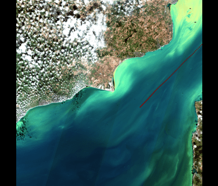

We are now accepting users
The AGUA AI Platform is a comprehensive, data-driven solution designed to detect, monitor, and track water pollutants, facilitating the effective management and prevention of water pollution. This user manual provides detailed instructions for administrators, organizations, and end users to utilize the platform's features and capabilities.

Introducing AGUA.SAT
Easy Data Access and Analysis
Effortlessly access and analyze relevant data from the EU Space Programme, including Copernicus and Galileo/EGNOS, to make informed decisions about plastic pollution management. Our user-friendly platform simplifies data extraction, processing, and visualization for users of all expertise levels.The AGUA AI Platform offers a wide range of features, including real-time monitoring and tracking, AI-powered analysis.
Use data visualization, collaboration tools, and customizable reports. By leveraging these features, users can make informed decisions, develop targeted solutions, and take collective action to address water pollution issues.

Real-time Plastic Pollution Monitoring
Experience cutting-edge satellite technology combined with advanced AI algorithms for accurate and real-time detection of plastic pollution in rivers, lakes, shores, and coastal zones. Stay informed and take prompt action to mitigate the impacts of pollution on marine life and human health.

The AGUA SAT Platform is designed to revolutionize the way organizations, administrators, and end-users monitor and address water pollution.
platform combines advanced artificial intelligence, machine learning, and satellite data analysis to provide a comprehensive, data-driven solution for detecting, tracking, and managing water pollutants in various water bodies, such as rivers, lakes, and coastal zones.
